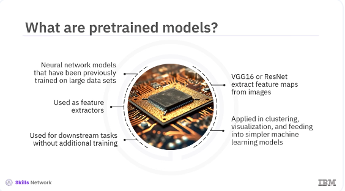
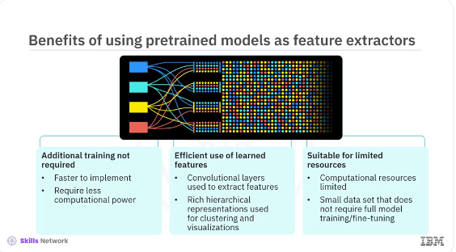
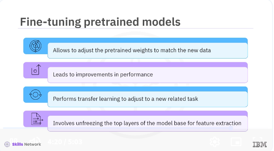

Using Pre-trained Models
Welcome to this video on using pretrained models. After watching this video, you'll be able to use pretrained models as feature extractors in Keras for various tasks and list the benefits and limitations of using pretrained models as fixed feature extractors.

Pretrained models are neural network models that have been previously trained on large datasets, such as ImageNet, to learn useful features that can be leveraged in new tasks. However, instead of fine-tuning these models for new tasks, we can use them directly as feature extractors. This approach involves using the pretrained model to extract high-level features from new data, which can then be used for various downstream tasks without additional training. For example, ImageNet trained models like VGG16 or ResNet are used to extract feature maps from images that can be applied in tasks, such as clustering, visualization, or feeding into simpler machine learning models. This method is beneficial when you want to utilize the powerful feature extraction capabilities of these models without modifying the original weights through retraining.

Using pretrained models as feature extractors offer several unique benefits, including additional training is not required. Since the model is used as a feature extractor without any retraining, it is faster to implement and requires significantly less computational power. Efficient use of learned features. The pretrained model's convolutional layers, which are used to extract features, capture rich hierarchical representations that can be utilized for various tasks like clustering or visualizations. Suitable for limited resources. This approach is ideal when computational resources are limited or when the new task does not have sufficiently large dataset to justify full model training or fine-tuning. Let's see how to use a pretrained model in Keras specifically for feature extraction.
pyenv activate venv3.10.4
cd /home/bbearce/Documents/code-journal/docs/notes/data_science/Coursera/Keras_and_Tensorflow
import os
import shutil
from PIL import Image
import numpy as np
# Define the base directory for sample data
base_dir = 'sample_data'
class1_dir = os.path.join(base_dir, 'class1')
class2_dir = os.path.join(base_dir, 'class2')
# Create directories for two classes
os.makedirs(class1_dir, exist_ok=True)
os.makedirs(class2_dir, exist_ok=True)
# Function to generate and save random images
def generate_random_images(save_dir, num_images):
for i in range(num_images):
# Generate a random RGB image of size 224x224
img = Image.fromarray(np.uint8(np.random.rand(224, 224, 3) * 255))
# Save the image to the specified directory
img.save(os.path.join(save_dir, f'image_{i}.jpg'))
# Number of images to generate for each class
num_images_per_class = 100 # You can increase this to have more training data
# Generate random images for class 1 and class 2
generate_random_images(class1_dir, num_images_per_class)
generate_random_images(class2_dir, num_images_per_class)
print(f'Sample data generated at {base_dir} with {num_images_per_class} images per class.')
We will load a pretrained model such as VGG16 and use it to extract features from a new dataset without any additional training. Let's see the example.
First, you need to create the sample data using this code snippet. Create directories for two classes, one and two. Define a function to generate random images.
Then save the images to the specified directories, and finally generate the images for the two classes. This sample data will be used in the pretrained model.
from tensorflow.keras.applications import VGG16
from tensorflow.keras.models import Sequential
from tensorflow.keras.layers import Dense, Flatten
from tensorflow.keras.preprocessing.image import ImageDataGenerator
from tensorflow.keras.optimizers import Adam
# Load the VGG16 model pre-trained on ImageNet
base_model = VGG16(weights='imagenet',
include_top=False, input_shape=(224, 224, 3))
# Freeze all layers initially
for layer in base_model.layers:
layer.trainable = False
# Create a new model and add the base model and new layers
model = Sequential([
base_model,
Flatten(),
Dense(256, activation='relu'),
Dense(1, activation='sigmoid')
# Change to the number of classes you have
])
This example demonstrates how to use pretrained models strictly for extracting features that can be applied to downstream tasks like clustering, visualization, or dimensionality reduction. First, load the VGG16 model pretrained on ImageNet, excluding the top fully connected layers with an input_shape of 224 by 224 by 3. The flatten method flattens the output of the base model. The dense layer adds a fully connected layer with 256 units and relu activation. The next dense layer adds a fully connected output layer with one unit and sigmoid activation.
# Compile the model
model.compile(
optimizer=Adam(learning_rate=0.001),
loss='binary_crossentropy',
metrics=['accuracy']
)
The model compile method compiles the model with the Adam optimizer and binary_crossentropy loss.
# Load and preprocess the dataset
train_datagen = ImageDataGenerator(rescale=1./255)
train_generator = train_datagen.flow_from_directory(
'sample_data',
target_size=(224, 224),
batch_size=32,
class_mode='binary'
)
# Train the model with frozen layers
model.fit(train_generator, epochs=10)
ImageDataGenerator rescales the image pixel values to zero, one. The flow_from_directory method loads and pre-processes the training data from a directory. Specifically, it reads images from the sample data directory, resizes them to 224 by 224 pixels, processes them in batches of 32, and expect binary class labels. The model.fit method trains the model for 10 epochs.
# Gradually unfreeze layers and fine-tune
for layer in base_model.layers[-4:]: # Unfreeze the last 4 layers
layer.trainable = True
# Compile the model again with a lower learning rate for fine-tuning
model.compile(optimizer=Adam(learning_rate=0.0001),
loss='binary_crossentropy', metrics=['accuracy'])
# Fine-tune the model
model.fit(train_generator, epochs=10)
Finally, fine-tuning involves unfreezing a few of the top layers of the frozen model base used for feature extraction and jointly training the newly added part of the model and the top layers. This step-by-step process demonstrates how easy it is to integrate pretrained models into your workflow using Keras. By doing so, you can leverage the powerful feature extraction capabilities of models like VGG16, which have been trained on extensive datasets.

Fine-tuning allows the model to adjust the pretrained weights to match the new data better. This fine-tuning can lead to significant improvements in performance, particularly when the new dataset differs considerably from the original dataset on which the model was trained. By fine-tuning, you are performing transfer learning. Transfer learning involves adjusting a pretrained model to a new related task. This adjustment is especially useful in scenarios where you do not have enough data to train a deep learning model from the outset. Fine-tuning involves unfreezing a few of the top layers of the frozen model base used for feature extraction and jointly training the newly added part of the model and the top layers. This training can greatly improve model performance when the new task is like the original task, but has some differences.
In this video, you learned that you can use a pretrained model as a feature extractor and fine-tune it for a new task. By leveraging pretrained models, you can significantly improve the performance of your models with less data and training time. By using models trained on large datasets, you can leverage the learned features to improve the performance of your models. Fine-tuning pretrained models allows you to adapt the model to your specific task, leading to an even better performance.